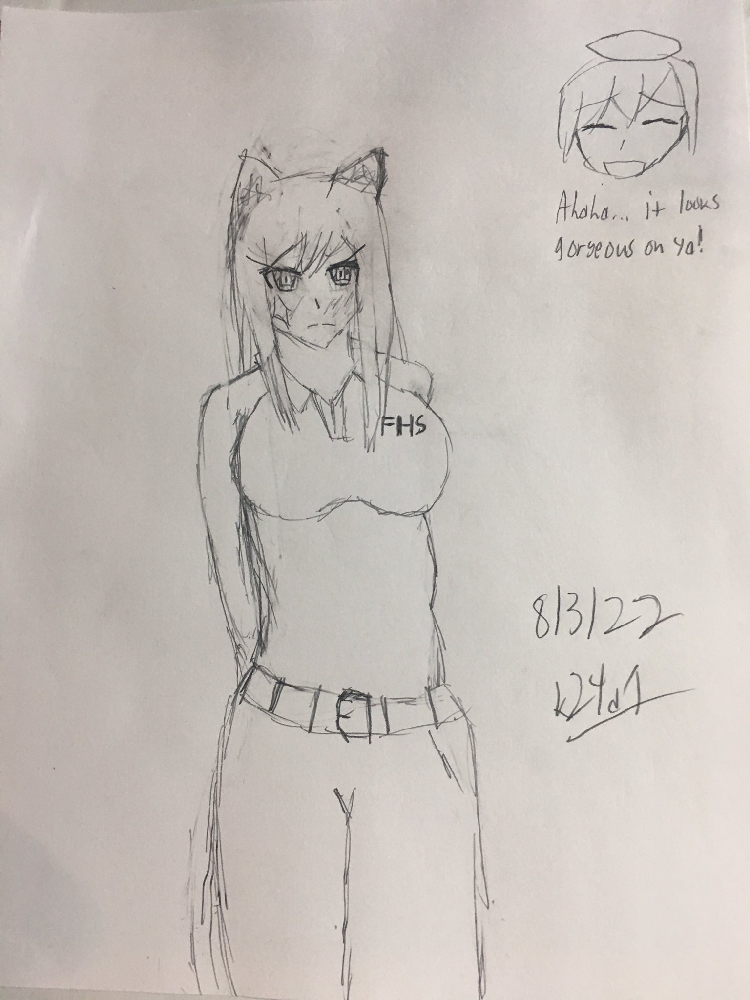

Artsy stuff
Yeah, if you didn't know, I draw. I did it pretty frequently during my last few months of High School (especially after my old bike got stolen back in march) but now I don't really do it often as I have other stuff on my plate these days.
2D/Hand-Drawn works
Aw hell nah, spunch bop cake "redraw"
So I had this image of an AI generated "poorly done spongebob cake" in my downloads folder, and I couldn't help but fucking lose it. THE WAY IT LOOKS IS TOO HILARIOUS FOR ME TO SHUT UP ABOUT.
I just drew this on my computer with a mouse, tracing over the image. Wasn't meant to look good, but neither was that "cake".
August 19, 2022
Sexy MuMu (Sensitive: "Lightly covered")

A friend gave me an idea to draw a "sexy muelsyse". I did it, on paper with pencil. Normally I don't draw sensitive/suggestive content, but I guess sometimes I feel like it. If you didn't know, Silence from Arknights is a good comfort character for me, even if I don't feel like playing AK. I knew a good amount of friends who liked the game, and I kinda just resonated with Silence for some reason.
August 3, 2022
Texas wearing the L4D2 coach outfit

The same friend who suggested me to draw MuMu in a bikini (or whatever), also suggested me to draw this. Texas is from Columbia (AK equivalent of the US if I'm correct) and how the characters she is usually paired with are from Laterano (Exusiai) or Siracusa (Lappland). Seeing as how it was that way, it gave me the idea to draw her in the L4D2 Coach outfit, because she could go for whatever he's having.
August 3, 2022
3D/CGI works
note: i suck at 3d modeling software so i just throw shapes together in bryce like its nobody's business
My reflections
ha you thought i was gon put shit in dis bitch


{kind=link}
{kind=link}